Week SEVEN.
Molding | Casting
Main Page
Takeaway - The Right Design Takes Time
I started this process, spending time thinking about what I wanted to mold and cast for this week. I didn't just want it to be just another thing, but instead to have some sort of utility or hold some meaning. So, I spent more time than I should have on thinking. I ended with creating a metallic paperweight slash stamp with my name in three languages. Arabic and English made sense for obvious reasons, but I also chose to use Braille as well.
You might be thinking (or not) that Braille isn't it's own language, but corresponds directly to a particular language. So, you have English Braille, Arabic Braille etc. Which of the two do you think I used?
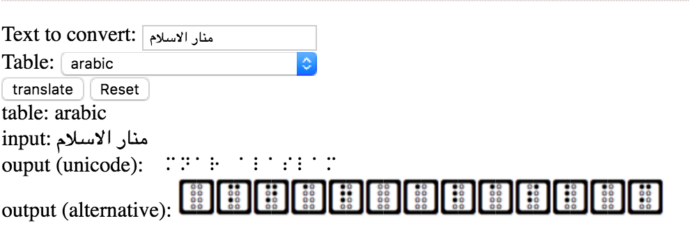
 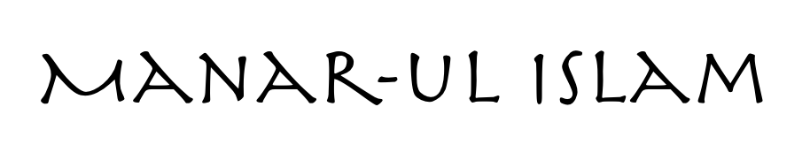
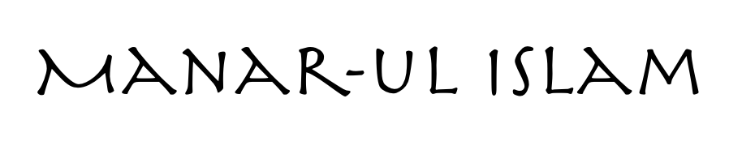
After a ridiculous amount of time, I created this base structure and the three face plates I would potentially attach to it to create this mold. Honestly, it wasn't very clear to me this process and amount of spatial reasoning. And so, I felt even more stuck in designing since I hadn't gone through this process. Go figure, that I should have tried something much more simpler to go through these methods and then begin again with a more intricate idea.
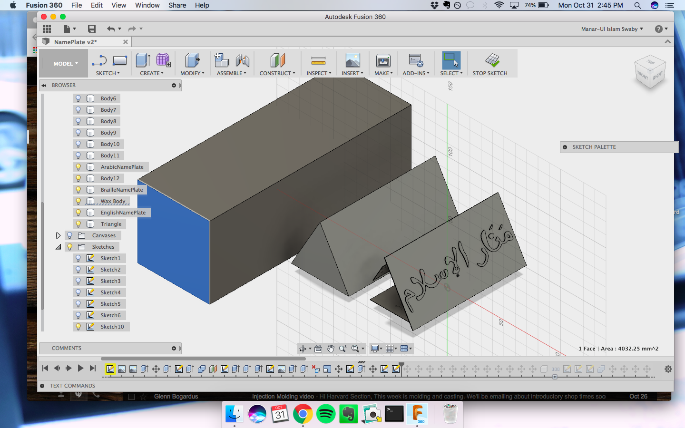
So, in order to adhere to the week's task, which although was about molding and casting, focused on the creating of toolpaths, I decided to change my design. It made me rather sad to do this--but I have to remember, this is a part of the process of learning these specific skills before I put them to proper use.
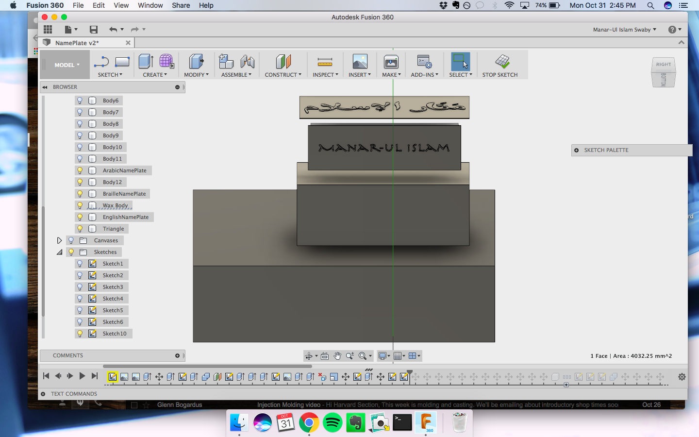Final Version of my Arabic Name Plate
Final Version of my Braille Name Plate
Unfortunately I have no visual evidence of the tool paths I created for these name plates, but I did use it, at first with the assistance of two classmates, and the second on my own. It isn't hard at all, but I see that going through the motion is particularly important. I created a well or pocket of sorts on the outside of these name plates, so the oomoo would have a place to fill in to properly create the mold.
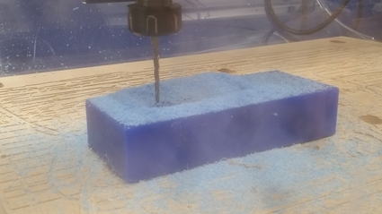After milling, this is what I got. As you can tell, I wasnt on my A game with photos this week--I was forced to use my phone's camera, which is rather busted and spotty. Nevertheless:
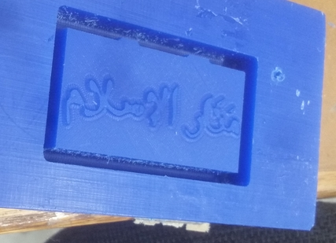I added these structures so the oomoo could have more height than what I designed for originally. And that's where I had to stop in all of this. My next steps are to cast this paperweight / stamp in metal.
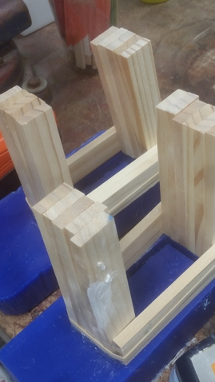 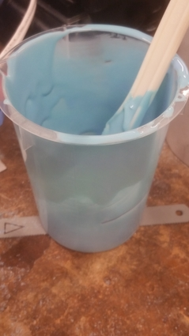 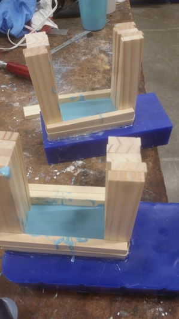
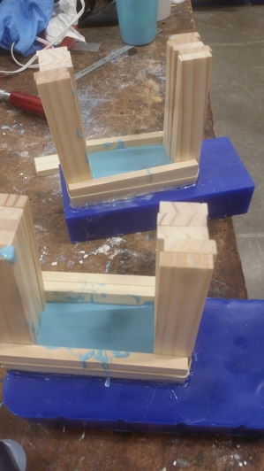